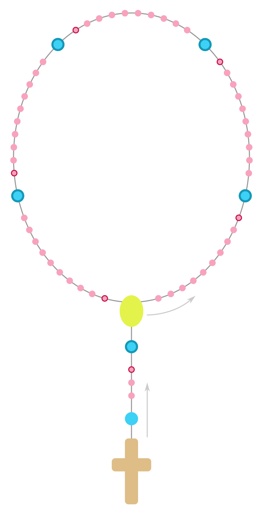

Венчик Божественного Милосердия
Крестное знамение
Во имя Отца и Сына и Святого Духа. Аминь.
Отче наш
Отче наш, сущий на небесах!
Да святится имя Твоё;
да приидет Царствие Твоё;
да будет воля Твоя и на земле, как на небе;
хлеб наш насущный дай нам на сей день;
и прости нам долги наши,
как и мы прощаем должникам нашим;
и не введи нас во искушение,
но избавь нас от лукавого.
Аминь.
Радуйся, Мария
Радуйся, Мария, благодати полная, Господь с Тобою;
благословенна Ты в жёнах
и благословен плод чрева Твоего Иисус.
Святая Мария, Матерь Божия, молись о нас, грешных,
ныне и в час смерти нашей.
Аминь.
Символ веры
Верую в Бога, Отца Всемогущего, Творца неба и земли.
И в Иисуса Христа, Единородного Сына Его, Господа нашего,
зачатого от Духа Святого, рождённого от Девы Марии,
страдавшего при Понтии Пилате, распятого, умершего и погребённого,
сошедшего во ад, в третий день воскресшего из мёртвых,
восшедшего на небеса и сидящего одесную Бога Отца Всемогущего,
оттуда грядущего судить живых и мёртвых.
Верую в Духа Святого, святую католическую Церковь,
общение святых, прощение грехов,
воскресение мёртвых и жизнь вечную.
Аминь.
На больших бусинах (обычных чёток):
Отче Вечный, приношу Тебе Тело и Кровь, Душу и Божество возлюбленного Сына Твоего, Господа нашего Иисуса Христа, во искупление грехов наших и грехов всего мира.
На малых бусинах (10 раз):
Ради Его скорбных Страстей помилуй нас и весь мир.
В конце (3 раза):
Святый Боже, Святый Крепкий, Святый Бессмертный, помилуй нас и весь мир.
Заключительная молитва (по желанию)
Боже, милосердный Отче, открывший любовь Твою в Сыне Твоём Иисусе Христе и изливший её на нас в Святом Духе Утешителе, мы вручаем Тебе ныне судьбы мира и каждого человека. Склонись к нам, грешным, исцели немощь нашу, победи всё зло, помоги всем людям на земле познать милосердие Твоё и обрести в Тебе, Боге, в Троице Едином, источник надежды. Отче Вечный, ради скорбных Страстей и Воскресения Сына Твоего помилуй нас и весь мир! Аминь. (Св. Иоанн Павел II.)
